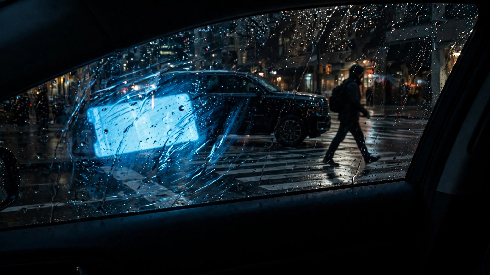

Distracted Driving Now Kills 39% of Pedestrians. Five Years Ago It Was 15%.

According to the Governors Highway Safety Association, distracted driving was the stated cause of 39 percent of pedestrian fatalities in 2024. In 2019, distraction accounted for 15 percent of pedestrian deaths and 15 percent of driver deaths.[1] That is a 160 percent increase in share across five years, during a period when the total number of pedestrians killed on American roads actually declined.
Total traffic deaths fell 6.7 percent in 2025, to 36,640, and dropped another 4.3 percent in Q1 2026.[2] The overall fatality rate hit 0.99 per 100 million VMT in Q1, the lowest first-quarter figure since 2014. By every aggregate measure, American roads are getting safer. But the composition of what kills pedestrians has shifted underneath those totals in a way that no one is celebrating.
Impaired driving enforcement works. Speed cameras work. Infrastructure redesigns that separate cars from foot traffic work. All three contributed to the decline in pedestrian deaths over the past several years. Distraction, however, grew fast enough to absorb most of the gains. In 2024, driver distraction was documented in 21.7 percent of all crash fatalities, both occupant and pedestrian combined.[1] For pedestrians alone, the figure was nearly double that.
The vehicles doing the killing track to what FARS data has shown for a decade. SUVs, pickups, and vans accounted for 50.4 percent of pedestrian fatalities, the first time the category exceeded half.[1] FARS records show the Ford F-150 was present at 20,066 fatal crashes between 2014 and 2023, and someone other than the truck's occupant died in 10,872 of them.[3] The Chevrolet Silverado was involved in 19,732 fatal crashes with 10,141 non-occupant deaths. A distracted driver behind the wheel of a 6,000-pound truck with a 48-inch hood height is not a scenario that a crosswalk redesign can fix.
Pedestrian fatalities now represent 10.1 percent of all crash fatalities, the first time the category crossed double digits since at least 2015.[1] Fatalities inside cars are dropping faster than fatalities outside them. Advanced driver-assistance systems, side curtain airbags, and structural reinforcements protect the person in the vehicle. The person on the sidewalk gets the grille.
If distraction's share had stayed at 15 percent while total pedestrian deaths declined at their actual rate, roughly 3,000 fewer pedestrians would have died from distraction-related crashes between 2019 and 2024. Part of that increase in share could reflect better crash investigation and attribution rather than a pure behavioral increase, but even half the shift is a catastrophe. Phones are filling the gap that DUI enforcement created.
If you are a pedestrian in an American city: 62.2 percent of people killed on foot were in a location without a sidewalk.[1] Eighty-four percent of pedestrian crashes occurred in urban areas, but rural crashes were nearly twice as likely to be fatal. The numbers point to a structural problem that isn't going away on its own. Walk facing traffic where there's no sidewalk. Cross at controlled intersections. Wear reflective material at night. And assume the driver of every vehicle you see is looking at a screen, because statistically, four out of ten times they are.
Sources & References
- Governors Highway Safety Association, Pedestrian Traffic Fatalities by State: 2024 Preliminary Data, July 2026. Cited via Streetsblog USA coverage: streetsblog.org
- NHTSA, Traffic Crash Deaths: Early Estimates Jan-March 2026. nhtsa.gov
- NHTSA, Fatality Analysis Reporting System (FARS) 2014–2023. nhtsa.gov